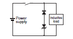

Building Automation
Industrial Automation
Power Automation & Safety


Bangladesh Distributor
Safety Relays
|
|
|
|
| Safety Precautions |
Related Contents
Refer to the "Safety Precautions" section for each Relay for specific precautions applicable to each Relay.
Relays with Forcibly Guided Contacts
Relays with Forcibly Guided Contacts
While the Relay with Forcibly Guided Contacts has the previously described forcibly guided contact structure, it is basically the same as an ordinary relay in other respects. Rather than serving to prevent malfunctions, the forcibly guided contact structure enables another circuit to detect the condition following a contact weld or other malfunction. Accordingly, when a contact weld occurs in a Relay with Forcibly Guided Contacts, depending on the circuit configuration, the power may not be interrupted, leaving the Relay in a potentially dangerous condition (as shown in Fig. 1.)
To configure the power control circuit to securely shut off the power when a contact weld or other malfunction occurs, and to prevent restarting until the problem has been eliminated, add another Relay with Forcibly Guided Contacts or similar Relay in combination to provide redundancy and a failure diagnosis function to the circuit (as shown in Fig. 2).
Refer to the Safety Components Technical Guide.
The G9S/G9SA/G9SB Safety Relay Unit, which combines Relays such as the Relay with Forcibly Guided Contacts in order to provide the above-described functions, is available for this purpose. By connecting a contactor with appropriate input and output to the Safety Relay Unit, the circuit can be equipped with redundancy and a failure diagnosis function.
Durability of Contact Outputs
Relay with Forcibly Guided Contact durability depends greatly on the switching condition. Confirm the actual conditions of operation in which the Relay will be used in order to make sure the permissible number of switching operations.
Switching ratings for Relays are generally given for resistive loads and are expressed as the rated voltage and rated current. It is very important that you do not exceed the ratings and allow sufficient leeway when using inductive or capacitive loads.
When the accumulated number of operation exceeds its permissible range, it can cause failure of reset of safety control circuit. In such case, please replace the Relay immediately. If the Relay is used continuously without replacing, then it can lead to loss of safety function.
CE Marking
(Source: Guidelines on the Application of Council Directive 2006/95/EC)
The G7SA, G7SB, G7S and G7S-[]-E have been recognized by the VDE for meeting the Low Voltage Directive according to EN requirements for relays and relays with forcibly guided contacts. The Low Voltage Directive, however, contains no clauses that specify handling methods for components, and interpretations vary among test sites and manufacturers. To solve this problem, the European Commission has created guidelines for the application of the Low Voltage Directive in EU. These guidelines present concepts for applying the Low Voltage Directive to components. The G7SA, G7SB, G7S and G7S-[]-E, however, do not display the CE Marking according to the concepts in the guidelines.
However, that does not affect compliance with the Low Voltage Directive and Machine Directive for devices and equipment that use the G7SA, G7SB, G7S or G7S-[]-E. Use the safety standard certificate as documentation to prove standard compliance.
Contents of the Guidelines
The Guidelines on the Application of Council Directive 2006/95/EC apply to components. Relays with PWB terminals are not covered by the Low Voltage Directive.
Note:
1. OMRON stopped accepting orders for the G7S in March 2013.
2. OMRON stopped accepting orders for the G7SB in March 2012.
3. OMRON stopped accepting orders for the G9S in March 2012.
Warning Indications
| Precautions for Safe Use | Supplementary comments on what to do or avoid doing, to use the product safely. |
| Precautions for Correct Use | Supplementary comments on what to do or avoid doing, to prevent failure to operate, malfunction or undesirable effect on product performance. |
Precautions for Safe Use
Do not touch the charged Relay terminal area or the charged socket terminal area while the power is turned ON. Doing so may result in electric shock.
Do not use a Relay for a load that exceeds the Relay's switching capacity or other contact ratings. Doing so will reduce the specified performance, causing insulation failure, contact welding, and contact failure, and the Relay itself may be damaged or burnt.
Do not drop or disassemble Relays.
Doing so may reduce Relay characteristics and may result in damage, electric shock, or burning.
Relay durability depends greatly on the switching conditions.
Confirm operation under the actual conditions in which the Relay will be used. Make sure the number of switching operations is within the permissible range. If a Relay is used after performance has deteriorated, it may result in insulation failure between circuits and burning of the Relay itself.
Do not apply overvoltages or incorrect voltages to coils, or incorrectly wire the terminals. Doing so may prevent the Relay from functioning properly, may affect external circuits connected to the Relay, and may cause the Relay itself to be damaged or burnt.
Do not use Relays where flammable gases or explosive gases may be present. Doing so may cause combustion or explosion due to Relay heating or arcing during switching.
Perform wiring and soldering operations correctly and according to the instructions contained in Precautions for Correct Use given below. If a Relay is used with faulty wiring or soldering, it may cause burning due to abnormal heating when the power is turned ON.
Precautions for Correct Use
1. Using Relays
When actually using Relays, unanticipated failures may occur. It is therefore essential to test the operation is as wide of range as possible.
Unless otherwise specified in this catalog for a particular rating or performance value, all values are based on JIS C5442 standard test conditions (temperature: 15 to 35°C, relative humidity: 25% to 75%, air pressure: 86 to 106 kPa). When checking operation in the actual application, do not merely test the Relay under the load conditions, but test it under the same conditions as in the actual operating environment and using the actual operating conditions.
The reference data provided in this catalog represent actual measured values taken from samples of the production line and shown in diagrams. They are reference values only.
Ratings and performance values given in this catalog are for individual tests and do not indicate ratings or performance values under composite conditions.
2. Selecting Relays
(1) Mounting Structure and Type of Protection
2-(1)-1 Type of Protection
If a Relay is selected that does not have the appropriate type of protection for the atmosphere and the mounting conditions, it may cause problems, such as contact failure.
Refer to the type of protection classifications shown in the following table and select a Relay suitable to the atmosphere in which it is to be used.
Classification by Type of Protection
| Item | Features | Representative model (Relays with Forcibly Guided Contacts) | Atmosphere conditions | |||
| Mounting structure | Type of protection | Dust and dirt | Corrosive gases | |||
| PCB-mounted Relay | Flux protection | Structure that helps prevent flux from entering Relays during soldering | G7SA | Some protection (No large dust or dirt particles inside Relay.) | No protection | |
| G7SB | ||||||
| Unsealed | Structure that protects against contact with foreign material by means of enclosure in a case (designed for manual soldering) | G7S-[]-E | ||||
| G7S | ||||||
2-(1)-2 Combining Relays and Sockets
Use OMRON Relays in combination with specified OMRON Sockets.If the Relays are used with sockets from other manufacturers, it may cause problems, such as abnormal heating at the mating point due to differences in power capacity and mating properties.
2-(1)-3 Using Relays in Atmospheres Subject to Dust
If a Relay is used in an atmosphere subject to dust, dust will enter the Relay, become lodged between contacts, and cause the circuit to fail to close. Moreover, if conductive material such as wire clippings enter the Relay, it will cause contact failure and short-circuiting.
Implement measures to protect against dust as required by the application.
(2) Drive Circuits
2.-(2)-1 Providing Power Continuously for Long Periods
If power is continuously provided to the coil for a long period, deterioration of coil insulation will be accelerated due to heating of the coil. Also see 3.-(2)-7 Using with Infrequent Switching.
2.-(2)-2 Operation Checks for Inspection and Maintenance
If a socket with an operation indicator is used, Relay status during operation can be shown by means of the indicator, thereby facilitating inspection and maintenance.
| Type | Description | Examples of applicable models | |
| Built-in indicator | LED |  | G7SA G7S-[]-E G7S |
Note:The built-in indicator shows that power is being provided to the coil. The indicator is not based on contact operation.
(3) Loads
2.-(3)-1 Contact Ratings
Contact ratings are generally shown for resistance loads and inductive loads.
2.-(3)-2 Using Relays with a Microload
Check the failure rate in the performance tables for individual products.
3. Circuit Design
(1) Load Circuits
3.-(1)-1 Load Switching
In actual Relay operation, the switching capacity, electrical durability,and applicable load will vary greatly with the type of load, the ambient conditions, and the switching conditions. Confirm operation under the actual conditions in which the Relay will be used.
1) Resistive Loads and Inductive Loads
The switching power for an inductive load will be lower than the switching power for a resistive load due to the influence of the electromagnetic energy stored in the inductive load.
2) Switching Voltage (Contact Voltage)
The switching power will be lower with DC loads than it will with AC loads. Applying voltage or current between the contacts exceeding the maximum values will result in the following:
1.The carbon generated by load switching will accumulate around the contacts and cause deterioration of insulation.
2.Contact deposits and locking will cause contacts to malfunction.
3) Switching Current (Contact Current)
Current applied to contacts when they are open or closed will have a large effect on the contacts. For example, when the load is a motor or a lamp, the larger the inrush current, the greater the amount of contact exhaustion and contact transfer will be, leading to deposits,locking, and other factors causing the contacts to malfunction.(Typical examples illustrating the relationship between load and inrush current are given below.)
If a current greater than the rated current is applied and the load is from a DC power supply, the connection and shorting of arcing contacts will result in the loss of switching capability.
DC Loads and Inrush Current
AC Loads and Inrush Current
| Type of load | Ratio of inrush current to steadystate current | Waveform |
| Solenoid | Approx. 10 | |
| Incandescent bulb | Approx. 10 to 15 | |
| Motor | Approx. 5 to 10 | |
| Relay | Approx. 2 to 3 | |
| Capacitor | Approx. 20 to 50 | |
| Resistive load | 1 | |
3.-(1)-2 Electrical Durability
Electrical durability will greatly depend on factors such as the coil drive circuit, type of load, switching frequency, switching phase, and ambient atmosphere. Therefore be sure to check operation in the actual application.
| Coil drive circuit | Rated voltage applied to coil using instantaneous ON/OFF |
| Type of load | Rated load |
| Switching frequency | According to individual ratings |
| Switching phase (for AC load) | Random ON, OFF |
| Ambient atmosphere | According to JIS C5442 standard test conditions |
3.-(1)-3 Failure Rates
The failure rates provided in this catalog are determined through tests performed under specified conditions. The values are reference values only. The values will depend on the operating frequency, the ambient atmosphere, and the expected level of reliability of the Relay. Be sure to check relay suitability under actual load conditions.
3.-(1)-4 Contact Protection Circuits
Using a contact protection circuit is effective in increasing contact durability and minimizing the production of carbides and nitric acid. The following table shows typical examples of contact protection circuits. Use them as guidelines for circuit design.
1.Depending on factors such as the nature of the load and the Relay characteristics, the effects may not occur at all or adverse effects may result. Therefore be sure to check operation under the actual load conditions.
2.When a contact protection circuit is used, it may cause the release time (breaking time) to be increased. Therefore be sure to check operation under the actual load conditions.
Typical Examples of Contact Protection Circuits
| Circuit example | Applicable current | Features and remarks | Element selection | ||
| AC | DC | ||||
| CR | * (Yes) | Yes | *Load impedance must be much smaller than the CR circuit impedance when using the Relay for an AC voltage. When the contacts are open, current flows to the inductive load via CR. | Use the following as guides for C and R values: C: 0.5 to 1 μF per 1 A of contact current (A) R: 0.5 to 1 Ω per 1 V of contact voltage (V) These values depend on various factors, including the load characteristics and variations in characteristics. Confirm optimum values experimentally. Capacitor C suppresses the discharge when the contacts are opened, while the resistor R limits the current applied when the contacts are closed the next time. Generally, use a capacitor with a dielectric strength of 200 to 300 V. For applications in an AC circuit, use an AC capacitor (with no polarity). If there is any question about the ability to cut off arcing of the contacts in applications with high DC voltages, it may be more effective to connect the capacitor and resistor across the contacts, rather than across the load. Perform testing with the actual equipment to determine this. | |
| Yes | Yes | The release time of the contacts will be increased if the load is a Relay or solenoid. | |||
| Diode | No | Yes | The electromagnetic energy stored in the inductive load reaches the inductive load as current via the diode connected in parallel, and is dissipated as Joule heat by the resistance of the inductive load. This type of circuit increases the release time more than the CR type. | Use a diode having a reverse breakdown voltage of more than 10 times the circuit voltage, and a forward current rating greater than the load current. A diode having a reverse breakdown voltage two or three times that of the supply voltage can be used in an electronic circuit where the circuit voltage is not particularly high. | |
| Diode + Zener diode |  | No | Yes | This circuit effectively shortens the release time in applications where the release time of a diode circuit is too slow. | The breakdown voltage of the Zener diode should be about the same as the supply voltage. |
| Varistor | Yes | Yes | This circuit prevents a high voltage from being applied across the contacts by using the constant-voltage characteristic of a varistor. This circuit also somewhat increases the release time. Connecting the varistor across the load is effective when the supply voltage is 24 to 48 V, and across the contacts when the supply voltage is 100 to 240 V. | The cutoff voltage Vc must satisfy the following conditions. For AC, it must be multiplied by √2 Vc > (Supply voltage × 1.5) If Vc is set too high, its effectiveness will be reduced because it will fail to cut off high voltages. | |
Do not use the following types of contact protection circuit.
| This circuit arrangement is very effective for diminishing arcing at the contacts when breaking the circuit. However, since electrical energy is stored in C (capacitor) when the contacts are open, the current from C flows into the contacts when they close. This may lead to contact welding. | This circuit arrangement is very useful for diminishing arcing at the contacts when breaking the circuit. However, since the charging current to C flows into the contacts when they are closed, contact welding may occur. |
Note:Although it is thought that switching a DC inductive load is more difficult than a resistive load, an appropriate contact protection circuit can achieve almost the same characteristics.
3.-(1)-5 Countermeasures for Surge from External Circuits
Install contact protection circuits, such as surge absorbers, at locations where there is a possibility of surges exceeding the Relay withstand voltage due to factors such as lightning. If a voltage exceeding the Relay withstand voltage value is applied, it will cause line and insulation deterioration between coils and contacts and between contacts of the same polarity.
3.-(1)-6 Connecting Loads for Multi-pole Relays
Connect multi-pole Relay loads according to diagram "a" below to avoid creating differences in electric potential in the circuits. If a multi-pole Relay is used with an electric potential difference in the circuit, it will cause short-circuiting due to arcing between contacts,damaging the Relays and peripheral devices.
3.-(1)-7 Motor Forward/Reverse Switching
Switching a motor between forward and reverse operation creates an electric potential difference in the circuit, so a time lag (OFF time) must be set up using multiple Relays.
3.-(1)-8 Power Supply Double Break with Multi-pole Relays
If a double break circuit for the power supply is constructed using multi-pole Relays, take factors into account when selecting models:Relay structure, creepage distance, clearance between unlike poles,and the existence of arc barriers. Also, after making the selection,check operation in the actual application. If an inappropriate model is selected, short-circuiting will occur between unlike poles even when the load is within the rated values, particularly due to arcing when power is turned OFF. This can cause burning and damage to peripheral devices.
3.-(1)-9 Short-circuiting Due to Arcing between NO and NC Contacts in SPDT Relays
With Relays that have NO and NC contacts, short-circuiting between contacts will result due to arcing if the space between the NO and NC contacts is too small or if a large current is switched.
Do not construct a circuit in such a way that overcurrent and burning occur if the NO, NC, and SPDT contacts are short-circuited.
3.-(1)-10 Using SPST-NO/SPST-NC Contact Relays as an SPDT Relay
Do not construct a circuit so that overcurrent and burning occur if the NO, NC and SPDT contacts are short-circuited. Also, with SPST-NO/SPST-NC Relays, a short-circuit current may flow for forward/reverse motor operation.
3.-(1)-11 Connecting Loads of Differing Capacities
Do not have a single Relay simultaneously switching a large load and a microload. The purity of the contacts used for microload switching will be lost as a result of the contact spattering that occurs during large load switching, and this may give rise to contact failure during microload switching.
(2) Input Circuits
3.-(2)-1 Maximum Allowable Voltage
The coil's maximum allowable voltage is determined by the coil temperature increase and the heat withstand temperature of the insulation material. (If the heat withstand temperature is exceeded, it will cause coil burning and layer shorting.) There are also important restrictions imposed to prevent problems such as thermal changes and deterioration of the insulation, damage to other control devices,injury to humans, and fires, so be careful not to exceed the specified values provided in this catalog.
3.-(2)-2 Voltage Applied to Coils
Apply only the rated voltage to coils. The Relays will operate at the must-operate voltage or greater, but the rated voltage must be applied to the coils in order to obtain the specified performance.
3.-(2)-3 Changes in Must-operate Voltage Due to Coil Temperature
It may not be possible to satisfy this catalog values for must-operate voltages during a hot start or when the ambient temperature exceeds 23°C, so be sure to check operation under the actual application conditions.
Coil resistance is increased by a rise in temperature causing the must-operate voltage to increase. The resistance thermal coefficient of a copper wire is approximately 0.4% per 1°C, and the coil resistance also increases at this percentage.
This catalog values for the must-operate voltage and must-release voltage are given for a coil temperature of 23°C.
3.-(2)-4 Applied Voltage Waveform for Input Voltage
As a rule, power supply waveforms are based on the rectangular (square) waveforms, and do not operate in such a way that the voltage applied to the coil slowly rises and falls. Also, do not use them to detect voltage or current limit values (i.e., using them for turning ON or OFF at the moment a voltage or current limit is reached).
This kind of circuit causes faulty sequence operations. For example,the simultaneous operability of contacts may not be dependable (for multi-pole Relays, time variations must occur in contact operations),and the must-operate voltage varies with each operation. In addition, the operation and release times are lengthened, causing durability to drop and contact welding. Be sure to use an instantaneous ON/OFF.
3.-(2)-5 Preventing Surges when the Coil Is Turned OFF
Counter electromotive force generated from a coil when the coil is turned OFF causes damage to semiconductor elements and faulty operation.
As a countermeasure, install surge absorbing circuits at both ends of the coil. When surge absorbing circuits have been installed, the Relay release time will be lengthened, so be sure to check operation using the actual circuits.
External surges must be taken into account for the repetitive peak reverse voltage and the DC reverse voltage, and a diode with sufficient capacity used. Also,ensure that the diode has an average rectified current that is greater than the coil current.
Do not use under conditions in which a surge is included in the power supply, such as when an inductive load is connected in parallel to the coil. Doing so will cause damage to the installed (or built-in) coil surge absorbing diode.
3.-(2)-6 Leakage Current to Relay Coils
Do not allow leakage current to flow to Relay coils. Construct a corrective circuit as shown in examples 1 and 2 below.
Example: Circuit with Leakage Current Occurring
Corrective Example 1
Corrective Example 2:
When an Output Value Is Required in the Same Phase as the Input Value
3.-(2)-7 Using with Infrequent Switching
For operations using a microload and infrequent switching,periodically perform continuity tests on the contacts. When switching is not executed for contacts for long periods of time, it causes contact instability due to factors such as the formation of film on contact surfaces.
The frequency with which the inspections are needed will depend on factors such as the operating environment and the type of load.
3.-(2)-8 Configuring Sequence Circuits
When configuring a sequence circuit, care must be taken to ensure that abnormal operation does not occur due to faults such as sneak current.
The following diagram shows an example of sneak current. After contacts A, B, and C are closed causing Relays X1, X2, and X3 to operate, and then contacts B and C are opened, a series circuit is created from A to X1 to X2 to X3. This causes the Relay to hum or to not release.
The following diagram shows an example of a circuit that corrects the above problem. Also, in a DC circuit, the sneak current can be prevented by means of a diode.
3.-(2)-9 Connecting Relay Grounds
Do not connect a ground when using a Relay at high temperatures or high humidity. Depending on the grounding method, electrolytic corrosion may occur, causing the wire to the coil to sever. If the Relay must be grounded, use the method shown in the following diagrams.
1) Ground the positive side of the power supply. (Fig. 1 and Fig. 2)
2) If grounding the positive side of the power supply is not possible and the negative side must be grounded, connect a switch at the positive side so that the coil is connected to the negative side.(Fig. 3)
3) Do not ground the negative side and connect a switch to the negative side.
This will cause electrolytic corrosion to occur. (Fig.4)
3.-(2)-10 Individual Specifications for Must-operate/release Voltages and Operate/Release Times
If it is necessary to know the individual specifications of characteristics, such as must-operate voltages, must-release voltages, operate times, and release times, please contact your OMRON representative.
3.-(2)-11 Using DC-operated Relays
1) Input Power Supply Ripple
For a DC-operated Relay power supply, use a power supply with a maximum ripple percentage of 5%. An increase in the ripple percentage will cause humming.
3.-(2)-12 Using DC-operated Relays
2) Coil Polarity
To make the correct connections, first check the individual terminal numbers and applied power supply polarities provided in this catalog.
If the polarity is connected in reverse for the coil power supply when Relays with surge suppressor diodes or Relays with operation indicators are used, it can cause problems such as Relay malfunctioning, damage to diodes, or failure of indicators. Also, for Relays with diodes, it can cause damage to devices in the circuit due to short-circuiting.
Polarized Relays that use a permanent magnet in a magnetic circuit will not operate if the power supply to the coil is connected in reverse.
3.-(2)-13 Using DC-operated Relays
3) Coil Voltage Insufficiency
If insufficient voltage is applied to the coil, either the Relay will not operate or operation will be unstable. This will cause problems such as a drop in the electrical durability of the contacts and contact welding.
In particular, when a load with a large surge current, such as a large motor, is used, the voltage applied to the coil may drop when a large inrush current occurs to operate the load as the power is turned ON.
Also, if a Relay is operated while the voltage is insufficient, it will cause the Relay to malfunction even at vibration and shock values below the specifications specified in the specification sheets and this catalog. Therefore, be sure to apply the rated voltage to the coil.
(3) Mounting Design
3.-(3)-1 Lead Wire Diameters
Lead wire diameters are determined by the size of the load current.As a standard, use lead wires at least the size of the cross-sectional areas shown in the following table. If the lead wire is too thin, it may cause burning due to abnormal heating of the wire.
| Permissible current (A) | Cross-sectional area (mm2) |
| 6 | 0.75 |
| 10 | 1.25 |
| 15 | 2 |
| 20 | 3.5 |
3.-(3)-2 When Sockets are Used
Check Relay and socket ratings, and use devices at the lower end of the ratings. Relay and socket rated values may vary, and using devices at the high end of the ratings can result in abnormal heating and burning at connections.
3.-(3)-3 Mounting Direction
Depending on the model, a particular mounting direction may be specified. Check this catalog and then mount the device in the correct direction.
3.-(3)-4 When Devices Such as Microcomputers are in Proximity
If a device that is susceptible to external noise, such as a microcomputer, is located nearby, take noise countermeasures into consideration when designing the pattern and circuits. If Relays are driven using a device such as a microcomputer, and a large current is switched by Relay contacts, noise generated by arcing can cause the microcomputer to malfunction.
4.Operating and Storage Environments
4.-1 Operating, Storage, and Transport
During operation, storage, and transport, avoid direct sunlight and maintain room temperature, humidity, and pressure.
If Relays are used or stored for a long period of time in an atmosphere of high temperature and humidity, oxidation and sulphurization films will form on contact surfaces, causing problems such as contact failure.
If the ambient temperature is suddenly changed in an atmosphere of high temperature and humidity, condensation will develop inside of the Relay. This condensation may cause insulation failure and deterioration of insulation due to tracking (an electric phenomenon)on the surface of the insulation material.
Also, in an atmosphere of high humidity, with load switching accompanied by a comparatively large arc discharge, a dark green corrosive product may be generated inside of the Relay. To prevent this, it is recommended that Relays be used in at low humidity.
If Relays are to be used after having been stored for a long period,first inspect the power transmission before use. Even if Relays are stored without being used at all, contact instability and obstruction may occur due to factors such as chemical changes to contact surfaces, and terminal soldering characteristics may be degraded.
4.-2 Operating Atmosphere
Do not use Relays in an atmosphere containing flammable or explosive gas. Arcs and heating resulting from Relay switching may cause fire or explosion.
Do not use Relays in an atmosphere containing dust. The dust will get inside the Relays and cause contact failure.
4.-3 Using Relays in an Atmosphere Containing Corrosive Gas (Silicon, Sulfuric, or Organic Gas)
Do not use Relays in a location where silicon gas, sulfuric gas (SO2 or H2S), or organic gas is present.
If Relays are stored or used for a long period of time in an atmosphere of sulfuric gas or organic gas, contact surfaces may become corroded and cause contact instability and obstruction, and terminal soldering characteristics may be degraded.
Also, if Relays are stored or used for a long period of time in an atmosphere of silicon gas, a silicon film will form on contact surfaces,causing contact failure.
The effects of corrosive gas can be reduced by the processing shown in the following table.
| Item | Processing |
| Outer case, housing | Seal structure using packing. |
| PCB, copper plating | Apply coating. |
| Connectors | Apply gold plating or rhodium plating. |
4.-4 Adhesion of Water, Chemicals, Solvent, and Oil
Do not use or store Relays in an atmosphere exposed to water,chemicals, solvent, or oil. If Relays are exposed to water or chemicals, it can cause rusting, corrosion, resin deterioration, and burning due to tracking. Also, if they are exposed to solvents such as thinner or gasoline, it can erase markings and cause components to deteriorate.
If oil adheres to the transparent case (polycarbonate), it can cause the case to cloud up or crack.
4.-5 Vibration and Shock
Do not allow Relays to be subjected to vibration or shock that exceeds the rated values.
If abnormal vibration or shock is received, it will not only cause malfunctioning but faulty operation due to deformation of components in Relays, damage, etc. Mount Relays in locations and using methods that will not let them be affected by devices (such as motors) that generate vibration so that Relays are not subjected to abnormal vibration.
4.-6 External Magnetic Fields
Do not use Relays in a location where an external magnetic field of 800 A/m or greater is present. If they are used in a location with a strong magnetic field, it will cause malfunctioning.
Also, strong magnetic field may cause the arc discharge between contacts during switching to be bent or may cause tracking or insulation failure.
4.-7 External Loads
Do not use or store Relays in such a way that they are subjected to external loads. The original performance capabilities of the Relays cannot be maintained if they are subjected to an external load.
4.-8 Adhesion of Magnetic Dust
Do not use Relays in an atmosphere containing a large amount of magnetic dust. Relay performance cannot be maintained if magnetic dust adheres to the case.
5. Relay Mounting Operations
(1) Plug-in Relays
5.-(1)-1 Panel-mounting Sockets
1. Socket Mounting Screws
When mounting a panel-mounting socket to the mounting holes,make sure that the screws are tightened securely. If there is any looseness in the socket mounting screws, vibration and shock can cause the socket, Relays, and lead wire to detach. Panel-mounting sockets that can be snapped on to a 35-mm DIN Track are also available.
2. Lead Wire Screw Connections
Tighten lead wire screws to a torque of 0.78 to 0.98 Nã»m (P7SA and P7S).
If the screws connecting a panel-mounting socket are not sufficiently tightened, the lead wire can become detached and abnormal heating or fire can be caused by the contact failure.Conversely, excessive tightening can strip the threads.
5.-(1)-2 Relay Removal Direction
Insert and remove Relays from the socket perpendicular to the socket surface.
If they are inserted or removed at an angle, Relay terminals may be bent and may not make proper contact with the socket.
5.-(1)-3 Terminal Soldering
Solder General-purpose Relays manually following the precautions described below.
1. Smooth the tip of the solder gun and then begin the soldering.
Solder: JIS Z3282, H60A or H63A (containing rosin-based flux)
Soldering iron: Rated at 30 to 60 W
Tip temperature: 280 to 300°C
Soldering time: Approx. 3 s max.
Note:For lead-free solder, perform the soldering under conditions that conform to the applicable specifications.
2. Use a non-corrosive rosin-based flux suitable for the Relay's structural materials. For flux solvent, use an alcohol-based solvent, which tends to be less chemically reactive.
3. As shown in the above illustration, solder is available with a cut section to prevent flux from splattering.
When soldering Relay terminals, be careful not to allow materials such as solder, flux, and solvent to adhere to areas outside of the terminals. If this occurs, solder, flux, or solvent can penetrate inside of the Relays and cause degrading of the insulation and contact failure.
(2) Printed Circuit Board Relays
5.-(2)-1 Ultrasonic Cleaning
Do not use ultrasonic cleaning for Relays that are not designed for it.Resonance from the ultrasonic waves used in ultrasonic cleaning can cause damage to a Relay's internal components, including sticking of contacts and disconnection of coils.
(3) Common Items
5.-(3)-1 Removing the Case and Cutting Terminals
Absolutely do not remove the case and cut terminals. Doing so will cause the Relay's original performance capabilities to be lost.
5.-(3)-2 Deformed Terminals
Do not attempt to repair and use a terminal that has been deformed.Doing so will cause excessive force to be applied to the Relay, and the Relay's original performance capabilities will be lost.
5.-(3)-3 Replacing Relays and Performing Wiring Operations
Before replacing a Relay or performing a wiring operation, first turn OFF the power to the coil and the load and check to make sure that the operation will be safe.
5.-(3)-4 Coating and Packing
G7SA, G7S-[]-E, G7S and G7SB Relays are not fully sealed, so do not use a coating or packing resin.
6. Handling Relays
6.-1 Vibration and Shock
Relays are precision components. Regardless of whether or not they are mounted, do not exceed the rated values for vibration and shock. The vibration and shock values are determined individually for each Relay, so check the individual Relay specifications in this catalog.
If a Relay is subjected to abnormal vibration or shock, its original performance capabilities will be lost.
6.-2 Dropped Products
Do not use a product that has been dropped, or that has been taken apart. Not only may its characteristics not be satisfied, but it may be susceptible to damage or burning.
7. Relays for Printed Circuit Boards (PCBs)
7.-1 Selecting PCBs
(1) PCB Materials
PCBs are classified into those made of epoxy and those made of phenol. The following table lists the characteristics of these PCBs.Select one, taking into account the application and cost. Epoxy PCBs are recommended for mounting Relays to prevent the solder from cracking.
| MaterialItem | Epoxy | Phenol | |
| Glass epoxy (GE) | Paper epoxy (PE) | Paper phenol (PP) | |
| Electrical characteristics | ・ High insulation resistance. ・ Insulation resistance hardly affected by moisture absorption. | Characteristics between glass epoxy and phenol | New PCBs arehighly insulationresistive but easily affected by moisture absorption. |
| Mechanical characteristics | ・ The dimensions are not easily affected by temperature or humidity. ・ Suitable for through-hole or multi-layer PCBs. | Characteristics between glass epoxy and phenol | ・ High insulation resistance. ・ Insulation resistance hardly affected by moisture absorption. |
| Relative cost | High | Moderate | Low |
| Applications | Applications that require high reliability. | Characteristics between glass epoxy and phenol Applications in comparatively good environments | Applications in comparatively good environments with low-density wiring. |
7.-2 Selecting PCBs
(2) PCB Thickness
The PCB may warp due to the size, mounting method, or ambient operating temperature of the PCB or the weight of components mounted to the PCB. Should warping occur, the internal mechanism of the Relay on the PCB will be deformed and the Relay may not provide its full capability. Determine the thickness of the PCB by taking the material of the PCB into consideration.
In general, PCB thickness should be 0.8, 1.2, 1.6, or 2.0 mm. Taking Relay terminal length into consideration, the optimum thickness is 1.6 mm.
7.-3 Selecting PCBs
(3) Terminal Hole and Land Diameters
Refer to the following table to select the terminal hole and land diameters based on the Relay mounting dimensions. The land diameter may be smaller if the land is processed with through-hole plating.
| Terminal hole diameter (mm) | Minimum land diameter (mm) | |
| Nominal value | Tolerance | |
| 0.6 | ±0.1 | 1.5 |
| 0.8 | 1.8 | |
| 1.0 | 2.0 | |
| 1.2 | 2.5 | |
| 1.3 | 2.5 | |
| 1.5 | 3.0 | |
| 1.6 | 3.0 | |
| 2.0 | 3.0 | |
7.-4 Mounting Space
(1) Ambient Temperature
When mounting a Relay, check this catalog for the specified amount of mounting space for that Relay, and be sure to allow at least that much space.
When two or more Relays are mounted, their interaction may generate excessive heat. In addition, if multiple PCBs with Relays are mounted to a rack, the temperature may rise excessively. When mounting Relays, leave enough space so that heat will not build up,and so that the Relays' ambient temperature remains within the specified operating temperature range.
(2) Mutual Magnetic Interference
When two or more Relays are mounted, Relay characteristics may be changed by interference from the magnetic fields generated by the individual Relays. Be sure to conduct tests using the actual devices.
7.-5 Pattern Design for Noise Countermeasures
(1) Noise from Coils
When the coil is turned OFF, reverse power is generated to both ends of the coil and a noise spike occurs. As a countermeasure,connect a surge absorbing diode. The diagram below shows an example of a circuit for reducing noise propagation.

(2) Noise from Contacts
Noise may be transmitted to the electronic circuit when switching a load, such as a motor or transistor, that generates a surge at the contacts. When designing patterns, take the following three points into consideration.
1. Do not place a signal transmission pattern near the contact pattern.
2. Shorten the length of patterns that may be sources of noise.
3.Block noise from electronic circuits by means such as constructing ground patterns.
(3) High-frequency Patterns
As the manipulated frequency is increased, pattern mutual interference also increases. Therefore, take noise countermeasures into consideration when designing high-frequency pattern and land shapes.
7.-6 Shape of Lands
1. The land section should be on the center line of the copper-foil pattern, so that the soldered fillets become uniform.
2. A break in the circular land area will prevent molten solder from filling holes reserved for components which must be soldered manually after the automatic soldering of the PCB is complete.
7.-7 Pattern Conductor Width and Thickness
The following thicknesses of copper foil are standard: 35 μm and 70 μm. The conductor width is determined by the current flow and allowable temperature rise. Refer to the chart below as a simple guideline.
Conductor Width and Permissible Current (According to IEC Pub326-3)
7.-8 Conductor Pitch
The conductor pitch on a PCB is determined by the insulation characteristics between conductors and the environmental conditions under which the PCB is to be used. Refer to the following graph. If the PCB must conform to safety organization standards (such as UL, CSA, or IEC), however, priority must be given to fulfilling their requirements. Also, multi-layer PCBs can be used as a means of increasing the conductor pitch.
Voltage between Conductors vs. Conductor Pitch (According to IEC Pub326-3)
7.-9 Securing the PCB
Although the PCB itself is not normally a source of vibration or shock,it may prolong vibration or shock by resonating with external vibration or shock. Securely fix the PCB, paying attention to the following points.
| Mounting method | Process |
| Rack mounting | No gap between rack's guide and PCB |
| Screw mounting | ・ Securely tighten screw. Place heavy components such as Relays on part of PCB near where screws are to be used. ・ Attach rubber washers to screws when mounting components that are affected by shock (such as audio devices.) |
7.-10 Automatic Mounting of PCB Relays
(1) Through-hole PCBs
When mounting a Relay to a PCB, take the following points into consideration for each process. There are also certain mounting precautions for individual Relays, so refer to the individual Relay precautions as well.

| 1.Do not bend any terminals of the Relay to use it as a self-clinching Relay. The initial performance characteristics of the Relay will be lost. 2.Execute PCB processing correctly according to the PCB process diagrams. | ||||||
| 1.The G7S-[]-E and G7S have no protection against flux penetration, so absolutely do not use the method shown in the diagram on the right, in which a sponge is soaked with flux and the PCB pressed down on the sponge. If this method is used for the G7S, it will cause the flux to penetrate into the Relay. Be careful even with the flux-resistant G7SA or G7SB, because flux can penetrate into the Relay if it is pressed too deeply into the sponge. 2.The flux must be a non-corrosive rosin-based flux suitable for the Relay's structural materials. For the flux solvent, use an alcohol-based solvent, which tends to be less chemically reactive. Apply the flux sparingly and evenly to prevent penetration into the Relay. When dipping the Relay terminals into liquid flux, be sure to adjust the flux level, so that the upper surface of the PCB is not flooded with flux. 3.Make sure that flux does not adhere anywhere outside of the Relay terminals. If flux adheres to an area such as the bottom surface of the Relay, it will cause the insulation to deteriorate. | ||||||
| Applicability of Dipping Method | ||||||
| G7S-[]-E G7S | G7SA | G7SB | ||||
| NO | YES (Must be checked when spray flexor is used.) | |||||
| 1.Preheating is required to create the optimum conditions for soldering. 2.The following conditions apply for preheating. | ||||||
| Temperature | 100°C max. | |||||
| Time | 1 min max. | |||||
| 3.Do not use a Relay if it has been left at a high temperature for a long period of time due to a circumstance such as equipment failure. These conditions will cause the Relay's initial characteristics to change. | ||||||
| Applicability of Preheating | ||||||
| G7S-[]-E G7S | G7SA | G7SB | ||||
| NO | YES | |||||
| Automatic soldering | Manual soldering | |||||
| 1. Flow soldering is recommended to assure a uniform solder joint. ・Solder: JIS Z3282 or H63A ・Solder temperature and soldering time: Approx. 250°C (DWS: Approx. 260°C) ・Solder time: 5 s max. (DWS: Approx. 2 s for first time and approx. 3 s for second time) ・Adjust the level of the molten solder so that the PCB is not flooded with solder. | 1. Smooth the solder with the tip of the iron, and then perform the soldering under the following conditions. ・ Solder: JIS Z3282, H60A, or H63A (containing rosin-based flux) ・Soldering iron: Rated at 30 to 60 W ・Tip temperature: 280 to 300°C ・Soldering time: Approx. 3 s max. 2. As shown in the above illustration, solder is available with a cut section to prevent flux from splattering.  | |||||
| Applicability of Automatic Soldering | Applicability of Manual Soldering | |||||
| G7S-[]-E G7S | G7SA | G7SB | G7S-[]-E G7S | G7SA | G7SB | |
| NO | YES | YES | YES | |||
| Note: For lead-free solder, perform the soldering under conditions that conform to the applicable specifications. | ||||||
| 1.Upon completion of automatic soldering, use a fan or other device to forcibly cool the PCB. This helps prevent the Relay and other components from deteriorating from the residual heat of soldering. 2.Fully sealed relays are washable. Do not, however, put fully sealed relays in a cold cleaning solvent immediately after soldering or the seals may be dameged. | ||||||
| Cooling | ||||||
| G7SA | G7SB | |||||
| Required | ||||||
| Refer to the following table to select the cleaning method and solvent. | ||||||
| Cleaning Method | ||||||
| G7S-[]-E G7S | G7SA | G7SB | ||||
| Neither boiling cleaning nor immersion cleaning is possible. Clean only the back of the PCB with a brush. | ||||||
| 1.With the G7SA, G7S-[]-E, G7S or G7SB coating will penetrate inside Relays and damage the contacts. Therefore either do not apply coating at all or apply the coating first, before mounting the Relays. 2.Be very careful in selecting the coating material. Depending on the type of coating selected, it may damage the Relay case and chemically dissolve the seals, causing them to lose their sealing capability. 3.Do not secure the entire Relay in resin, or the Relay's characteristics will be changed. Do not exceed the maximum value for the coating's ambient operating temperature. | ||||||
8. Troubleshooting
The following table can be used for troubleshooting when Relay operation is not normal. Refer to this table when checking the circuit and other items. If checking the circuit reveals no abnormality, and it appears that the fault is caused by a Relay, contact your OMRON representative. (Do not disassemble the Relay. Doing so will make it impossible to identify the cause of the problem.)
A Relay is composed of various mechanical parts, including a coil,contacts, and iron core. Among these, problems occur most often with the contacts, and next often with the coil.
These problems, however, mostly occur as a result of external factors such as methods and conditions of operation, and can generally be prevented by means of careful consideration before operation and by selecting the correct Relays.
The following table shows the main faults that may occur, their probable causes, and suggested countermeasures to correct them.
| Fault | Probable cause | Countermeasures |
| (1) Operation fault | 1. Incorrect coil rated voltage selected 2. Faulty wiring 3. Input signal not received 4. Power supply voltage drop 5. Circuit voltage drop (Be careful in particular of high-current devices operated nearby or wired at a distance.) 6. Rise in operating voltage along with rise in ambient operating temperature (especially for DC) 7. Coil disconnection | 1. Select the correct rated voltage. 2. Check the voltage between coil terminals. 3. Check the voltage between coil terminals. 4. Check the power supply voltage. 5. Check the circuit voltage. 6. Test individual Relay operation. 7. ・For coil burning, see fault (3). ・For disconnection due to electrical corrosion, check the polarity being applied to the coil voltage. |
| (2) Release fault | 1. Input signal OFF fault 2. Voltage is applied to the coil by a sneak current 3. Residual voltage by a combination circuit such as a semiconductor circuit 4. Release delay due to parallel connection of coil and capacitor 5. Contact welding | 1. Check the voltage between coil terminals. 2. Check the voltage between coil terminals. 3. Check the voltage between coil terminals. 4. Check the voltage between coil terminals. 5. For contact welding, see fault (4). |
| (3) Coil burning | 1. Unsuitable voltage applied to coil 2. Incorrect rated voltage selected 3. Short-circuit between coil layers | 1. Check the voltage between coil terminals. 2. Select the correct rated voltage. 3. Recheck the operating atmosphere. |
| (4) Contact welding | 1. Excessive device load connected (insufficient contact capacity) 2. Excessive switching frequency 3. Short-circuiting of load circuit 4. Abnormal contact switching due to humming 5. Expected service life of contacts reached | 1. Check the load capacity. 2. Check the number of switches. 3. Check the load circuits. 4. For humming, see fault (7). 5. Check the contact ratings. |
| (5) Contact failure | 1. Oxidation of contact surfaces 2. Contact abrasion and aging 3. Terminal and contact displacement due to faulty handling | 1. ・Recheck the operating atmosphere. ・Select the correct Relay. 2. The expected service life of the contacts has been reached. 3. Be careful of vibration, shock, and soldering operations. |
| (6) Abnormal contact consumption | 1. Unsuitable Relay selection 2. Insufficient consideration of device load (especially motor, solenoid, and lamp loads) 3. No contact protection circuit 4. Insufficient withstand voltage between adjacent contacts | 1. Select the correct Relay. 2. Select the correct devices. 3. Add a circuit such as a spark quenching circuit. 4. Select the correct Relay. |
| (7) Humming | 1. Insufficient voltage applied to coil 2. Excessive power supply ripple (DC) 3. Incorrect coil rated voltage selected 4. Slow rise in input voltage 5. Abrasion in iron core 6. Foreign material between moveable iron piece and iron core | 1. Check the voltage between coil terminals. 2. Check the ripple percentage. 3. Select the correct rated voltage. 4. Make supplemental changes to circuit. 5. The expected service life has been reached. 6. Remove the foreign material. |